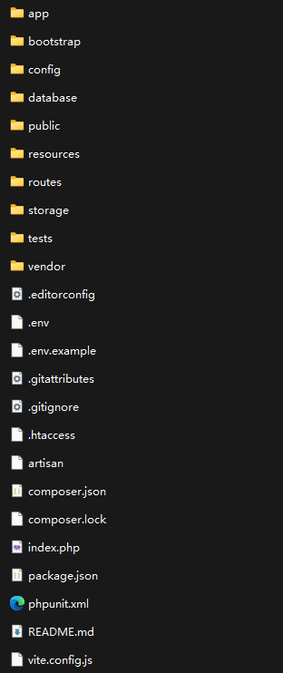

欢迎使用Laravel开发教程！
这是一个关于如何使用Laravel框架开发web应用程序的综合教程。
快速上手
Lravel 目录介绍:
- 其中app目录是程序的核心代码，包括控制器、模型、服务提供者等；
- config 目录是包括应用程序的配置文件，例如 数据库、缓存、邮件
- database 目录包括数据相关的文件，例如迁移文件、种子文件等；
- public 目录包括公共文件，例如前端资源、入口文件等；
- resources 目录包含了视图文件和原生资源文件js css 本地化语言文件...；
- routes 目录包含了所有的路由定义，常用的就两种 web.php 和 api.php；
- storage 目录包含了通过编译后的blade模板、基于文件的session、文件缓存以及其他由框架生成的文件
- tests 目录包含自动化测试的文件，其中提供了一个开箱即用的PHPUnit示例；每一个测试类都要以Test开头，使用者可以通过phpunit或php vendor/bin/phpunit命令来运行测试;
- vendor 目录包含所有Composer依赖
web.php：文件包含的路由都会应用在web中间件组，具备了session、CSRF防护以及Cookie加密，这里就是前后端不分离的那种。
api.php：文件包含的路由都会应用在api中间件组，具备频率限制功能，这里可以通过token认证，但是无法访问session状态，这里就是前后端分离的接口。
app目录用于存放应用要使用的文件，里面的public目录用于用户存储的文件，例如上传的图片资源等
如果想要这些文件被访问，还需要在public目录下生成一个软连接指向这个目录。使用者可以通过php artisan storage:link命令生成这个软连接
framework目录用于存放框架生成的文件和缓存
logs目录用于存放日志文件
Installing Laravel
To install Laravel, you can use Composer, the PHP dependency management tool.
$ composer global require laravel/installerSetting up the Development Environment
Before you start developing with Laravel, make sure you have the following:
- PHP >= 7.4
- Composer
- MySQL or SQLite
Creating a New Laravel Project
Once you have installed Laravel and set up your development environment, you can create a new Laravel project using the following command:
Next Steps
Now that you have created your Laravel project, you can start developing your web application. Refer to the Laravel documentation for more detailed information on how to use Laravel features and components.